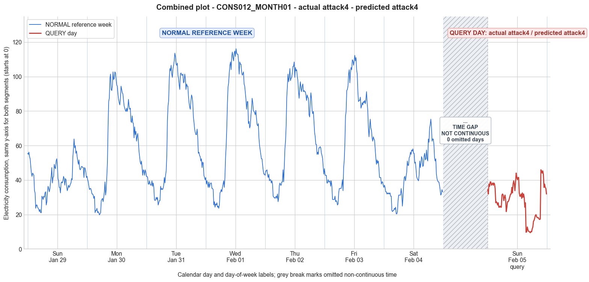

CONS012_MONTH01 · actual attack4 · predicted attack4
- Pair
- CONS012_MONTH01
- GT
- attack4
- Prediction
- attack4
- Binary GT
- attacked
- Binary Prediction
- attacked
- Source
- E010
- Parse
- stored
- Date
- 2012-02-05
- Weekday
- Sunday
- Latency
- 2.05 min
- Tokens
- 9754

Final output
Classification: - Manipulated Identified Attack: - Most Likely: Attack 4 - Confidence: High - Reasoning: The query day shows a sustained period of abnormally low consumption (readings ~9–19) that is absent in the reference Sunday and inconsistent with any normal diurnal pattern. This matches Attack 4’s definition of a randomly selected interval where all measurements are reduced. Attack 2 was ruled out because values are not replaced by zeros. Attack 3 was considered but the reduction is clearly block‑wise rather than scattered random scaling across the whole day, making a targeted time‑period attack far more plausible. Attack_Behavior_Explanation: - How consumption values are manipulated: The attacker chooses a random temporal window (here approximately from late afternoon to late evening) and reduces all electricity readings within that window, likely by multiplying the true consumption by a factor between 0.1 and 0.4. - Impact on magnitude and trend: Overall daily magnitude drops (mean from ~40.6 to 28.5 kWh). The trend is altered by introducing a deep, square‑wave‑like trough that violates the expected smooth rise and fall of a typical Sunday profile. - Possible technical causes: Meter bypass, magnetic interference, reverse current, or false data injection that selectively depresses reported usage during the attack period.
Prompt
You are a domain expert in smart grid security and electricity theft analysis, with deep knowledge of non-technical loss (NTL) attack patterns in smart meters. You are given: 1. A plot of one week of original (normal) energy consumption for a smart meter, provided as context for the customer's typical consumption behavior. 2. A plot of one day of energy consumption for the same smart meter, which may or may not be manipulated. Below are common attack types, each defined by how consumption values are altered, their impact on magnitude and trend, and their possible technical causes. Attack 0: Generated by replacing all electricity consumption samples with zero values for the entire observation duration. Simulates a scenario where no energy usage is reported at all. May be caused by a total meter bypass or severe meter malfunction. Completely eliminates both the trend and magnitude of the consumption profile. Attack 1: Multiplies the actual energy consumption by a constant random value between (0,1). The lower the factor, the higher the severity. Can be triggered by meter bypass, magnetic interference, reverse current, and false data injection. The consumption trend remains the same but the magnitude is uniformly reduced. Attack 2: Generated by replacing consumption samples with zeros for a random duration. Also known as an on-off attack. Can be caused by full meter bypass, false data injection, and reverse current. Changes both the trend and amplitude. Attack 3: The actual consumption is multiplied by different random factors between 0 and 1, with a unique factor per sample. Similar to Attack 1 but the scaling factor varies per reading. Caused by meter bypass, magnetic interference, and reverse current. Changes both the trend and amplitude. Attack 4: Simulates energy theft over a randomly selected period within the observation window. All measurements in that period are reduced. Caused by meter bypass, magnetic interference, reverse current, and false data injection. Changes both the trend and amplitude. Attack 5: Each sample is replaced by a false value obtained by multiplying the average normal consumption by a random variable between 0 and 1, with a different variable per sample. Caused by false data injection. Produces a completely different pattern from the original consumption profile, changing both trend and magnitude. Attack 6: A random cut-off point is selected and all consumption values above it are replaced by that cut-off value. The attacker avoids exceeding a predefined maximum limit. Mainly caused by false data injection. Changes both the trend and amplitude. Attack 7: A random cut-off point is subtracted from each sample; if the result is negative, zero is reported. Similar to Attack 6 but replaces exceeding values with zero instead of the cut-off point. May be caused by false data injection or total meter bypass. Does not change the trend but reduces overall consumption. Attack 9: All samples are replaced by the average daily energy consumption, resulting in a flat constant profile. Easily detectable because constant consumption does not reflect normal customer behavior. Caused by false data injection. Eliminates all trends. Attack 10: Reverses the consumption pattern without reducing the total amount. Applicable when the electricity company uses time-varying pricing, allowing the attacker to shift high consumption to off-peak periods. Caused by false data injection. Changes the trend without decreasing total consumption. Attack 12: The attacker replaces their consumption pattern with that of a lower-consuming user. The legitimate user unknowingly pays the adversary's electricity bill. Caused by false data injection. Attack IEEE: For each 15-minute interval across the entire day, the consumer either reports the actual electricity consumption or substitutes it with zero. The result is a profile where some intervals reflect real consumption while others are zeroed out, creating an irregular pattern across the full day. May be caused by false data injection. Changes both the trend and amplitude. Given the two plots, determine: 1. Whether the day is attacked or original - compare the flagged day against the normal week and assess whether the consumption pattern is consistent with normal behavior or shows signs of manipulation. If the day is consistent with the customer's typical consumption behavior, classify it as original and provide no further analysis. If manipulation is detected, proceed to point 2. 2. Which attack type this most likely is - identify the single most probable attack and justify your choice based on how the flagged day deviates from the normal week. 3. The behavior of the identified attack - explain how the consumption values are manipulated, their impact on magnitude and trend, and the possible technical causes behind this type of attack. Output Format: Classification: - Original | Manipulated Identified Attack: (fill only if manipulated) - Most Likely: Attack X - Confidence: High | Medium | Low - Reasoning: Why it matches Attack X and why Attack Y and Attack Z were ruled out (list top 2 alternatives considered) Attack_Behavior_Explanation: (fill only if manipulated) - How consumption values are manipulated relative to the normal week - Impact on magnitude and trend - Possible technical causes
Reasoning content
We are given reference week data for a smart meter (CONS_NO=12, Winter, Sunday Feb 5 2012 for Day 0 of the week? Actually metadata says MONTH_ID=1, WEEK_ID=1, DAY_ID=0, cal_month=1, dow=6, dom=0. Query day is also DAY_ID=0 but with cal_month=2, dow=6, dom=7. So this is a Sunday in February (dom=7) vs the reference week Day 0 which was also a Sunday (dom=0, February 5? Actually cal_month=1 for reference Day 0, so January? Wait: cal_month=1, dom=0. That seems like January 1? But dow=6 is Sunday. The dates are given: 2012-02-05 for reference Day 0? The metadata says "Reference week: Day 0: cal_month=1, dow=6, dom=0" and "Date=2012-02-05". There's inconsistency: 2012-02-05 is Sunday, dom=5? Actually 2012-02-05 is Sunday, month=2, day=5. But they list cal_month=1, dom=0. That could be a different indexing. Regardless, the query day is DAY_ID=0 with cal_month=2, dow=6, dom=7, which is also a Sunday (dow=6). So we compare a Sunday with the reference Sunday (Day 0 of reference week). The reference week includes 7 days: Day 0 (Sunday) through Day 6 (Saturday). The query day is also a Sunday, so it's the same day of week, allowing direct comparison. Now, statistics: Reference week Day 0 (Sunday): min=21.06, max=63.82, std=9.88, mean=40.58 Query day: min=9.46, max=45.95, std=9.91, mean=28.52 The query day has lower min, max, and mean. The std is similar (9.91 vs 9.88), but the mean is significantly lower (28.52 vs 40.58). This suggests the entire consumption pattern might be scaled down, with similar variability but lower magnitude. Now look at the actual data. Reference Day 0: values range from 21.06 to 63.82, generally high in the evening? Query day: values range from 9.46 to 45.95. The pattern looks like it has a similar shape? Let's examine. Reference Day 0 (96 readings): 55.52, 54.88, 56.16, 53.61, 52.33, 47.86, 44.03, 42.12, 44.03, 43.40, 42.76, 33.82, 32.55, 23.61, 25.53, 25.53, 24.25, 23.61, 22.97, 21.70, 22.97, 21.06, 21.06, 30.63, 29.99, 28.72, 30.63, 29.99, 32.55, 33.18, 25.53, 27.44, 33.18, 36.38, 35.10, 33.18, 35.10, 38.93, 42.12, 47.22, 38.29, 41.48, 42.12, 49.14, 47.22, 46.59, 51.05, 52.33, 48.50, 40.84, 39.57, 35.74, 35.74, 32.55, 38.29, 38.93, 38.29, 39.57, 42.12, 40.84, 37.01, 40.84, 40.20, 36.38, 33.82, 35.10, 37.01, 35.74, 36.38, 37.65, 38.29, 40.84, 40.20, 52.97, 58.07, 63.82, 58.71, 59.99, 55.52, 56.80, 53.61, 51.05, 49.14, 51.69, 46.59, 45.95, 46.59, 47.86, 47.86, 47.22, 47.22, 41.48, 47.22, 46.59, 44.67, 41.48 Query day: 34.46, 31.91, 37.65, 36.38, 38.93, 38.93, 37.01, 37.65, 38.29, 37.01, 38.29, 37.65, 35.10, 26.80, 27.44, 26.80, 25.53, 26.80, 24.25, 24.25, 24.89, 24.25, 24.25, 31.27, 31.91, 31.27, 28.08, 29.99, 31.27, 28.72, 21.70, 24.25, 27.44, 27.44, 28.08, 29.36, 30.63, 31.91, 31.91, 35.74, 32.55, 37.65, 39.57, 37.65, 33.82, 38.93, 44.03, 41.48, 40.20, 41.48, 41.48, 32.55, 30.63, 30.63, 31.91, 29.36, 32.55, 29.99, 31.91, 29.99, 24.25, 26.80, 9.72, 9.97, 12.78, 11.25, 10.23, 10.23, 9.72, 9.46, 10.23, 9.97, 11.76, 12.78, 16.11, 16.62, 17.90, 19.43, 19.94, 18.92, 18.15, 18.15, 18.15, 17.39, 17.13, 17.39, 45.95, 45.31, 44.03, 45.31, 43.40, 35.74, 37.65, 35.74, 35.10, 31.91 I notice that the query day has a very low valley around readings 63-84 (indices 63 to 84, 1-based? Actually the readings are 96 per day). The low stretch from index 63 onward: 9.72, 9.97, 12.78, 11.25, 10.23, 10.23, 9.72, 9.46, 10.23, 9.97, 11.76, 12.78, 16.11, 16.62, 17.90, 19.43, 19.94, 18.92, 18.15, 18.15, 18.15, 17.39, 17.13, 17.39. Then a sudden spike to 45.95, 45.31, etc. This looks like a period of very low consumption (close to zero but not exactly zero? Values around 9-12, not zero. But the minimum is 9.46, not zero. Wait, the min is 9.46, not zero. So it's not a total zero attack. But it's extremely low compared to the rest of that day and the reference day. Comparing with reference Day 0: at similar time? Let's align times. The 96 readings represent 15-minute intervals from midnight. The reference Day 0 had values at the end (readings 73-96? Let's see: reference day last readings: ... 40.84, 40.20, 52.97, 58.07, 63.82, 58.71, 59.99, 55.52, 56.80, 53.61, 51.05, 49.14, 51.69, 46.59, 45.95, 46.59, 47.86, 47.86, 47.22, 47.22, 41.48, 47.22, 46.59, 44.67, 41.48. So from about 6pm onward? Rough mapping: reading 1 = 00:00-00:15. Reading 97 would be next day. So reading 73 is 18:00-18:15. Reference day had values ~52.97, 58.07, 63.82... so evening peak. In query day, around readings 63-84 (which is roughly 15:45 to 21:00? 63*15min = 15:45; 84*15min = 21:00), we see very low values. Then after that a sudden spike (45.95 at reading 85, 21:15). That spike is late evening? The reference day evening peak was around 52-63, so this spike of 45.95 is somewhat lower but still a peak. The very low values (9-12) during what should be a high usage period (late afternoon/evening) is suspicious. This looks like a period of reduction, possibly an on-off attack or a specific attack that zeroes or reduces for a random duration? But values are not zero; they are around 9-12, which is significantly lower than the typical baseline. The reference day minimum was 21.06, so values below 20 are unusual. The query day has many values below 20 throughout, including the early morning? Let's check query day early part: readings 1-62 show values mostly in 24-44 range, some dips to 21.7, 24.25, etc. But reference Day 0 had values as low as 21.06, so 24-44 is somewhat in line but the mean is lower. However, the low stretch at 63-84 is drastically low (9-19). That looks like a deliberate reduction for that period. Let's compute the ratio of query to reference for similar times? Since both are Sundays, we can directly compare. One way is to overlay. I suspect attack type 4: "Simulates energy theft over a randomly selected period within the observation window. All measurements in that period are reduced." The reduction could be a multiplication. In attack 4, a period is chosen and all measurements are reduced. The reduction could be a constant factor? The definition: "Attack 4: Simulates energy theft over a randomly selected period within the observation window. All measurements in that period are reduced." It doesn't specify the reduction factor, but likely multiplication by a small factor or subtraction. In the query day, we see a sudden drop to around 9-19 for about 22 readings (5.5 hours) and then a recovery. Outside that period, values are somewhat lower than reference but not as drastically. Could also be Attack 2: "replacing consumption samples with zeros for a random duration" but here values are not zeros. Attack IEEE is also about zeroing some intervals across the day, but here we see a contiguous block of low values, not scattered zeros. Attack 6 and 7 involve cut-off values, but here we see a block of low values that are not all the same; they vary (9.46 to 19.94). Attack 3 multiplies by random factors per sample, which could cause variable reduction across the day, but why a contiguous block? It could be that the attacker scaled differently for a period, but Attack 3 says unique factor per sample, not per period. Attack 4 specifically says "over a randomly selected period". Given the data, it looks like a period of severe reduction. The pattern otherwise resembles a typical Sunday with morning low, then increase, then a dip? Actually reference Day 0: from midnight to early morning, values are high? Wait, reference Day 0 starts with 55.52 at midnight? That's odd because normally midnight consumption is low. But looking at reference Day 0: first reading 55.52, 54.88... seems like late evening maybe? Let's check the ordering: Day 0 is Sunday, so the readings start at midnight Sunday. But a typical residential pattern: low after midnight, then morning increase. But reference Day 0 starts at 55, which is high. Maybe the day includes the previous evening? Actually, they said "one week of original (normal) energy consumption", and each day is 96 readings. The first day is Day 0, which might correspond to a specific date. We don't need to overthink daily pattern; we just see that the query day has a drastic dip. Could it be a malfunction? But the task is to identify if it's an attack. The query day's mean is 28.52 vs reference mean 40.58, about 70% of the reference. That could be Attack 1: constant multiplier between 0 and 1. But the presence of a prolonged extremely low period suggests non-uniform reduction. If it were Attack 1, all values would be scaled equally, so the pattern shape would be identical, just lower. Let's check if the shape of the query day matches reference day scaled? Quick check: reference day first few: 55.52*0.7 = 38.86, query first is 34.46; reference day around index 40-50: 38.93, 42.12, 47.22, etc., query has 35.74, 32.55, 37.65, etc. Not exactly scaled. The low stretch in reference day around indices 63-84? Let's find reference day readings near that index: reference day indices 63-84 (approx). Reference day from 63 to 84: I count: index 63 = 40.84? Let's list reference day from reading 61 to 96: 61:37.01, 62:40.84, 63:40.20, 64:36.38, 65:33.82, 66:35.10, 67:37.01, 68:35.74, 69:36.38, 70:37.65, 71:38.29, 72:40.84, 73:40.20, 74:52.97, 75:58.07, 76:63.82, 77:58.71, 78:59.99, 79:55.52, 80:56.80, 81:53.61, 82:51.05, 83:49.14, 84:51.69, 85:46.59, 86:45.95, 87:46.59, 88:47.86, 89:47.86, 90:47.22, 91:47.22, 92:41.48, 93:47.22, 94:46.59, 95:44.67, 96:41.48. So around index 63-84, reference day values are between 35 and 64, not low at all. So query day's deep trough from ~9 to 19 is a stark deviation, far below any normal consumption. This is a clear sign of manipulation. Thus, I'd classify as Manipulated. The most likely attack: Attack 4 seems best because there's a distinct period where consumption is drastically reduced (not zero, but very low). Could it be Attack 2? Attack 2 replaces with zeros for a random duration; here we have non-zero values, so not Attack 2. Attack 3 multiplies each sample by a random factor; if the period chosen had factors close to 0.1-0.2, it could create such a trough, but Attack 3 is per sample variation without specifying a block; the contiguous block points to a deliberate period. Attack 4 explicitly says "all measurements in that period are reduced." It doesn't say they are zeroed, just reduced. The reduction could be multiplication by a small factor. Here the values in that block are around 9-19, while normal would be maybe 35-60? So factor roughly 0.2-0.4. So Attack 4 fits. Could it be Attack IEEE? That scatters zeros throughout the day, not a block. Attack 5 replaces all samples with random values based on average normal consumption, which would produce a flat random pattern, not this. Attack 6/7 are cut-off attacks, which would clamp values above a threshold, but here we see a period of uniformly low values that then spikes, which is not typical for a cut-off. Attack 10 is reversal, which wouldn't reduce total consumption. Attack 12 is swapping with another user, but that would introduce a completely different pattern, possibly not just a trough. Thus, I'll go with Attack 4. Confidence: Medium-high. Because the trough is very distinct and matches the description. Now, output format: Classification: Manipulated. Identified_Attack: Most Likely: Attack 4. Confidence: High. Reasoning: Compare with Attack 2 and Attack 3. Attack 2 is ruled out because values are not zero; Attack 3 is less likely because the reduction is concentrated in a contiguous block rather than random sample-by-sample variation throughout the day. Attack_Behavior_Explanation: over a randomly selected period, all measurements are reduced (multiplied by a small factor or otherwise lowered), leading to a significant drop in consumption for that duration while the rest of the day remains relatively normal. Magnitude is decreased overall, trend is altered during the attack period. Possible causes: meter bypass, magnetic interference, reverse current, false data injection. I'll formulate the final answer accordingly.